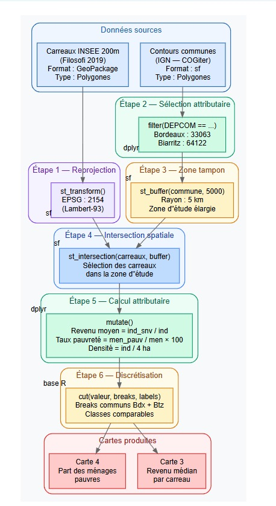

Méthodologie SIG
Introduction
Cet onglet présente l’ensemble des traitements SIG réalisés sous R pour produire les cartes et analyses de ce projet. La méthodologie s’articule autour de trois types d’opérations : les géotraitements vecteur, les géotraitements raster, et les jointures attributaires. Ces traitements ont été appliqués de manière identique sur les deux territoires étudiés — Bordeaux et Biarritz — afin de garantir la comparabilité des résultats.
Les packages R principalement utilisés sont : sf
(manipulation de données vectorielles), terra (traitement
raster), dplyr (manipulation attributaire) et
ggplot2 (cartographie).
Géotraitements vecteur
Les géotraitements vecteur portent sur des entités géographiques discrètes représentées sous forme de polygones : contours de communes et carreaux INSEE. Ces opérations permettent de structurer l’espace d’étude et de calculer les indicateurs socio-économiques à représenter.
Schéma de géotraitement vecteur

Schéma de l’enchaînement des géotraitements vecteur, depuis les données sources jusqu’aux cartes produites.
Étapes réalisées
| Étape | Opération | Fonction R | Package |
|---|---|---|---|
| 1 | Reprojection en Lambert-93 | st_transform(2154) |
sf |
| 2 | Sélection attributaire des communes | filter(DEPCOM == "33063") |
dplyr |
| 3 | Création de la zone tampon (5 km) | st_buffer(commune, 5000) |
sf |
| 4 | Intersection spatiale carreaux × buffer | st_intersection(carreaux, buffer) |
sf |
| 5 | Calcul des indicateurs | mutate() |
dplyr |
| 6 | Discrétisation en classes communes | cut(valeur, breaks, labels) |
base R |
| 7 | Cartographie | ggplot2 + geom_sf() |
ggplot2 |
Indicateurs calculés à l’étape 5
carreaux <- carreaux %>%
mutate(
revenu_moyen = ind_snv / ind, # Revenu moyen par individu (€/an)
taux_pauvrete = men_pauv / men * 100, # Part des ménages pauvres (%)
densite = ind / 4 # Densité (individus/ha, 1 carreau = 4 ha)
)Cartes produites
Ces géotraitements aboutissent à deux cartes comparatives Bordeaux / Biarritz :
- Carte 3 — Revenu médian par carreau (200m)
- Carte 4 — Part des ménages pauvres par carreau (200m)
Géotraitements raster
Les géotraitements raster permettent de convertir des données vectorielles en surface continue pour les superposer à d’autres couches et produire une carte de synthèse. Dans ce projet, les carreaux Filosofi (initialement des polygones vecteur) sont rastérisés afin d’être combinés avec les données communales OFGL.
⚠️ Point méthodologique important : les carreaux Filosofi sont fournis en format vecteur (polygones GeoPackage). La conversion en raster via
terra::rasterize()est une étape de traitement choisie pour permettre la superposition avec la couche communale et produire une carte de synthèse continue.
Schéma de géotraitement raster

Schéma de l’enchaînement des géotraitements raster, incluant la jointure attributaire et la rastérisation.
Étapes réalisées
| Étape | Opération | Fonction R | Package |
|---|---|---|---|
| 1 | Reprojection + intersection des carreaux | st_transform() + st_intersection() |
sf |
| 2 | Création zone tampon 5 km | st_buffer(5000) |
sf |
| 3 | Jointure OFGL sur les communes | left_join() |
dplyr |
| 4 | Rastérisation des carreaux | terra::rasterize() |
terra |
| 5 | Rastérisation des communes OFGL | terra::rasterize() |
terra |
| 6 | Superposition raster + vecteur | geom_raster() + geom_sf() |
ggplot2 |
Carte produite
Ce géotraitement aboutit à :
- Carte raster 1 — Taux de pauvreté (carreaux) × Dépenses d’équipement par habitant (communes OFGL)
Jointures attributaires
La jointure attributaire est l’opération qui permet de relier un tableau de données socio-économiques à une couche géographique via un identifiant commun. Elle ne modifie pas la géométrie des entités, mais enrichit leur table attributaire.
Jointure réalisée
| Couche géographique | Table attributaire | Clé de jointure | Fonction R |
|---|---|---|---|
| Contours communes (IGN) | Recettes communes (OFGL) | Code INSEE commune | left_join() |
# Jointure entre les géométries communales et les données OFGL
communes_ofgl <- communes %>%
left_join(ofgl, by = c("INSEE_COM" = "code_insee"))Pourquoi un left_join() ?
Le left_join() conserve toutes les communes de
la couche géographique, même celles absentes des données OFGL.
Cela évite de perdre des géométries en cas de données manquantes, et
permet de visualiser les zones sans information financière.
Synthèse des traitements
| Type | Opérations | Cartes produites |
|---|---|---|
| Vecteur | Reprojection, sélection, buffer, intersection, calcul attributaire, discrétisation | Carte 3 (revenu médian), Carte 4 (part ménages pauvres) |
| Raster | Rastérisation, superposition raster/vecteur | Carte raster 1 (pauvreté × dépenses équipement) |
| Jointure | left_join() OFGL × communes IGN |
Enrichissement attributaire pour carte raster |
Conclusion
La combinaison de géotraitements vecteur et raster permet d’appréhender les inégalités socio-spatiales à différentes échelles et sous différentes formes. Les traitements vecteur offrent une précision géométrique adaptée à l’analyse carroyée fine, tandis que la rastérisation permet une lecture continue et synthétique du territoire. Les jointures attributaires constituent le lien essentiel entre les données géographiques et les données socio-économiques, rendant possible la cartographie thématique.
L’ensemble de ces traitements a été appliqué de manière symétrique sur Bordeaux et Biarritz, garantissant ainsi la comparabilité des analyses présentées dans les onglets suivants.